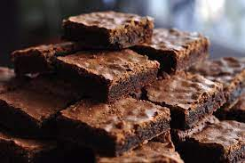

Brownie

Description
A brownie is a delightful baked treat that boasts a rich and fudgy texture.
It typically has a deep, dark color and a luscious aroma that can make mouths water.
With its decadent taste and moist interior, the brownie is often enjoyed as a dessert or indulgent snack.
Its irresistible appeal lies in its hability to strike a perfect balance between sweetness and chocolatey goodness.
Whether enjoyed plain or paired with a scoop of ice cream, a brownie never fails to satisfy cravings and provide a moment of pure indulgence.
Ingredients
- 1/2 cup of butter
- 1 cup of white sugar
- 2 eggs
- 1 teaspoon vanilla extract
- 1/3 cup of unsweetned cocoa powder
- 1/2 cup all-purpose flour
- 1/4 teaspoon salt
- 1/4 teaspoon baking powder
Frosting
- 3 tablespoons butter, softened
- 3 tablespoons unsweetned cocoa powder
- 1 tablespoon honey
- 1 teaspoon vanilla extract
- 1 cup confectioners' sugar
Hot to Make a Brownie Step-By-Step:
- Preheat the oven to 350 degrees F (175 degrees C). Grease and flour an 8-inch square pan.
- Melt 1/2 cup of butter in a large saucepan. Remove from heat, and stir in sugar, eggs, and 1 teaspoon vanilla. Beat 1/3 cup cocoa, flour, salt, and baking powder. Spread batter into prepared pan.
- Bake in the preheated oven until top is dry and edges have started to pull away from the sides of the pan, about 25 to 30 minutes. Let cool briefly before frosting.
- To make the frosting: combine softened butter, confectioners' sugar, 3 tablespoons cocoa, and 1 tablespoon vanilla extract in a bowl. Stir until smooth. Frost brownies while they are still warm.